目次
WOD-E2E: Waymo Open Dataset for End-to-End Driving in Challenging Long-tail Scenarios
Runsheng Xu*†、Hubert Lin*、Wonseok Jeon、Hao Feng、Yuliang Zou、Liting Sun、John Gorman、Ekaterina Tolstaya、Sarah Tang、Brandyn White、Ben Sapp、Mingxing Tan、Jyh-Jing Hwang†、Dragomir Anguelov
Waymo LLC
arXiv:2510.26125v3 [cs.CV]、2025年11月13日
翻訳について：原文 PDF は
65_WOD_E2E_2510.26125.pdf（全 15 ページ）。本文、図の説明、図中ラベル、表、脚注、付録を訳出し、論文タイトルと参考文献は原文のまま掲載。図は原図を掲載し、英語ラベルの日本語訳を併記した。数式・数値・引用番号・コードの識別子は原文を維持。原文の記述に関する補足は「訳注」と明示し、本文と区別している。
脚注*：同等の貢献。
脚注†：連絡先メール：Runsheng Xu <runshengxu@waymo.com>、Jyh-Jing Hwang <jyhh@waymo.com>。
要旨
視覚ベースのエンドツーエンド（E2E）運転は、そのスケーラビリティとマルチモーダル大規模言語モデル（MLLM）との相乗効果により、研究コミュニティで大きな関心を集めている。しかし、現在の E2E 運転ベンチマークは主に通常の（nominal）シナリオで構成されており、これらのシステムの真の潜在能力を十分に試すことができていない。さらに、既存のオープンループ評価指標は、運転のマルチモーダルな性質を捉えきれず、ロングテールシナリオにおける性能を効果的に評価できないことが多い。これらの課題に対処するため、我々は Waymo Open Dataset for End-to-End Driving（WOD-E2E）を導入する。WOD-E2E は 4,021 個の運転セグメント（約 12 時間）を含み、日常生活では発生頻度が 0.03% 未満とまれな、困難なロングテールシナリオに特化して選定されている。具体的には、WOD-E2E の各セグメントは、高レベルの経路情報、自車状態、および周囲 8 台のカメラによる 360 度のカメラビューを含む。
これらのロングテール状況における E2E 運転性能を評価するため、我々は新しいオープンループ評価指標である Rater Feedback Score（RFS）を提案する。予測したウェイポイントとログとの距離を測る従来の指標とは異なり、RFS は、予測された軌道が評価者（rater）の付与した軌道の選好ラベルにどれだけ近く合致するかを測定する。我々は WOD-E2E の検証セットの全セグメントについて評価者の選好ラベルを公開しており、非公開のテストセットのラベルは 2025 WOD-E2E Challenge に用いられた。本研究を通じて、複雑な実世界の状況に対処できる、汎化性が高く頑健で安全なエンドツーエンド自動運転エージェントに関する最先端の研究を促進することを目指す。
1 はじめに
自動運転システムは従来、運転タスクを知覚・予測・計画といった個別のサブタスクに分解するモジュール型の設計手法に従ってきた［13, 15, 22, 27, 36, 38］。このモジュール型設計は解釈可能性やデバッグの面で利点がある一方、研究コミュニティは近年、視覚ベースのエンドツーエンド（E2E）アーキテクチャの探究へと関心を移している［7, 21, 30, 34, 37］。この転換は主に、生のセンサデータを運転行動へ直接写像する E2E システムが本来持つスケーラビリティによって推進されており、これにより基盤となるシステムの複雑さと、中間概念に対する評価者のアノテーションの必要性が低減される［33］。さらに、先行研究［14, 28］が示すように、マルチモーダル大規模言語モデル（MLLM）とその世界知識を E2E 運転に活用することには将来性がある。
このような将来性にもかかわらず、NAVSIM［8］、WOMD［10］、CoVLA［1］といった現在の実世界 E2E 運転データセットは、主に通常の運転シナリオで構成されており、起こりうる実世界の状況のロングテールにシステムを十分にさらすものではない。このようなロングテール事例の乏しさは、E2E 運転システムの真の潜在能力、頑健性、汎化能力を正確に評価することを妨げている。
本論文では、新たに公開した Waymo Open Dataset for End-to-End Driving（WOD-E2E）を紹介する。これはロングテール状況に明示的に焦点を当てたものである。図1に示すように、WOD-E2E は発生頻度が 0.03% 未満のまれな実世界シナリオを特徴とする。我々は合計約 12 時間からなる 4,021 個の困難な運転セグメントを提供し、各セグメントは 360 度の視野をカバーする周囲 8 台のカメラ、高レベルの経路情報、自車の位置履歴、および 5 秒間の将来軌道を含む。これらの運転セグメントは、自動運転と手動運転の混合から収集されている。
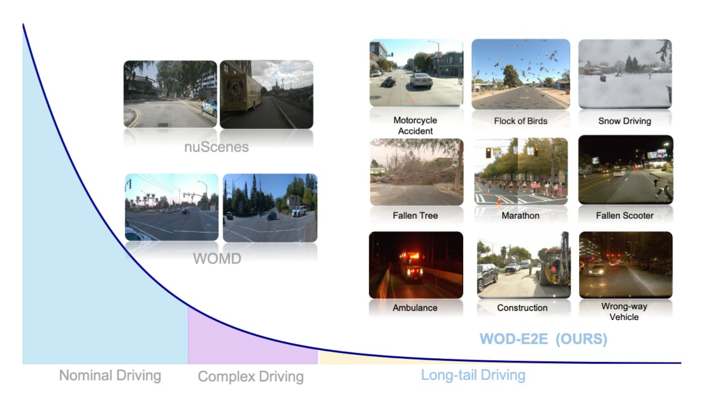
図1：Waymo Open Dataset for End-to-End Driving（WOD-E2E）のロングテールシナリオの例。E2E 運転のベンチマークに一般的に用いられる既存のデータセットとは異なり、WOD-E2E データセットはロングテールシナリオにより明示的に焦点を当てている。3.3 節の分析により、WOD-E2E は日常の運転において頻度 0.03% 未満のロングテールシナリオを捉えていることが示される。
図中ラベル：Nominal Driving＝通常の運転、Complex Driving＝複雑な運転、Long-tail Driving＝ロングテールの運転、Motorcycle Accident＝オートバイ事故、Flock of Birds＝鳥の群れ、Snow Driving＝雪道走行、Fallen Tree＝倒木、Marathon＝マラソン、Fallen Scooter＝転倒したスクーター、Ambulance＝救急車、Construction＝工事、Wrong-way Vehicle＝逆走車、WOD-E2E (OURS)＝WOD-E2E（本研究）
さらに我々は、従来のオープンループ指標が、これらのロングテールシナリオにおける運転性能を適切に評価できないことが多いことを観察した。広く用いられている平均距離誤差（ADE）すなわち L2 誤差の指標は、予測と単一の将来の正解軌道との誤差のみを捉えるが、運転行動は本質的にマルチモーダルであり、複数の妥当な将来軌道がありうる。PDMS スコア［8］のような予測的な指標は、衝突率を計算するために道路エージェントの位置と将来軌道のアノテーションを必要とするため、新規の物体や検出が困難な物体（例えば図1に示す鳥の群れ）が関わる多くのロングテールシナリオでは実用的でなくなる。さらに、PDMS では道路外への逸脱行動に通常大きなペナルティが課されるが、安全上重要な多くのロングテールシナリオでは、自動運転車が緊急事態を回避するために部分的に道路外へ逸脱することが合理的な場合がある。これらの限界に対処するため、WOD-E2E データセットには人間の運転選好ラベルのサブセットも含まれており、各事例における複数の候補軌道に対する専門家の評価を提供する。これらのラベルを活用し、オープンループ設定における E2E 運転性能をよりよく評価するための新しいオープンループ評価指標、Rater Feedback Score（RFS）を提案する。
我々は、データセットと RFS を検証するため、頑健なベースラインモデルを用いた厳密な研究を行う。データセットの公開以来、研究コミュニティから大きな関心が寄せられており、すでに多数の手法が我々の公開リーダーボードに投稿・評価されている。MLLM［25, 29］、拡散モデル［17］、GRU/MLP を備えた CNN/ViT アーキテクチャ［23］といった手法を用いるこれら上位手法の多様性は、WOD-E2E データセットの有用性と、エンドツーエンド自動運転研究のさらなる進展を推進する可能性を一層強調している。本研究の貢献は次のようにまとめられる。
- エンドツーエンド自動運転システムのベンチマークのために、ロングテールシナリオに焦点を当てた新しいオープンデータセット WOD-E2E を導入する。これは 4,021 個の困難な運転セグメントを含み、合計約 12 時間のデータで、日常の運転において頻度 0.03% 未満で発生する実世界のロングテールシナリオを表している。
- 新しい、人間と整合したオープンループ指標である Rater Feedback Score（RFS）を提案する。RFS は、ADE や PDMS といった従来のオープンループ指標の限界に対処し、ロングテールシナリオにおける E2E 運転性能をよりよく評価するよう設計されている。
- この新しいデータセットに基づき、我々のベースライン E2E モデルと公開リーダーボードに投稿された複数の手法について、詳細な比較と分析を提供する。広範な参加は、本データセットが E2E 運転研究の促進に有用であることを裏付けている。
本論文の残りの部分では、まず 2 節で関連研究について述べる。3 節では、提案する WOD-E2E データセットについて、概要、定量分析、マイニング戦略、ラベリング、および評価者フィードバックスコアの指標を含めて詳しく説明する。最後に、4 節ですべての実験結果と詳細な分析をまとめ、5 節で本論文を締めくくる。
2 関連研究
2.1 エンドツーエンド自動運転の研究
生のセンサ入力を制御出力へ直接写像する E2E 自動運転のパラダイムは、従来のモジュール型パイプラインの複雑さを克服しようとする活発な研究分野であり続けている［14, 33］。近年の研究は、特に基盤モデルの利用を通じて、E2E システムの能力を大きく前進させてきた。全体として、現在の手法は次の 3 つのカテゴリに分けられる。
鳥瞰図（BEV）ベースの E2E プランナ：この種の手法は、複数のセンサからの情報を単一の包括的な BEV 表現に融合し、そこから知覚と計画の両タスクを直接実行することを目指す。UniAD［12］はその典型例であり、知覚モジュールからの BEV クエリを追跡、動き予測、占有予測といった下流タスクへと伝播させ、最終的にエンドツーエンドの計画を可能にする。同様に、BEV-Planner［16］は BEV 特徴から明示的な計画方策を直接学習することに焦点を当て、密な BEV 表現が頑健なエンドツーエンド制御をいかに促進しうるかを示している。これらのアプローチは、計画のための明示的な中間知覚出力を超えるものである。全体として、これらの統一された BEV 中心の手法は、さまざまな運転サブタスクにわたって一貫した空間理解を提供することで、計算効率と一貫性の面で利点をもたらす。
マルチモーダル大規模言語モデルベースの E2E プランナ：顕著な動向の一つは、マルチモーダル大規模言語モデル（MLLM）を活用して、E2E 運転システムに強化された推論能力と世界知識を付与することである。DriveGPT4［37］は LLM を用いて、反復的な質疑応答形式で車両の行動の説明と制御信号の予測の両方を行う。DriveVLM［28］はエンドツーエンド運転に思考の連鎖（chain-of-thought）を適用し、VLP［21］は MLLM の推論を鳥瞰図（BEV）空間に直接適用する。EMMA［14］は Gemini を活用し、計画、3D 検出、道路理解を含む複数の運転タスクを統一された言語空間内で処理する。OpenEMMA［34］と LightEMMA［24］は同様のパラダイムに従い、それぞれオープンソース版と軽量版を構築している。さらに、S4-Driver［33］は MLLM からの視覚トークンを 3D 空間へ持ち上げることを提案している。
拡散ベースの E2E プランナ：拡散モデルは、運転行動のマルチモーダルな性質を捉え、多様でもっともらしい軌道を生成することに優れている。特に、DiffusionDrive［17］は、リアルタイムの E2E 運転のために、打ち切り拡散方策（truncated diffusion policy）と効率的なカスケードデコーダを導入している。EnDfuser［32］はさらに、拡散アンサンブルを用いて軌道計画における不確実性を推定することを探究し、カメラと LiDAR の融合特徴を活用して候補軌道の分布を生成する。
2.2 エンドツーエンド自動運転のオープンデータセット
今日では多数の自動運転データセットが利用可能であり、多様な運転タスクを支えている。代表的な例として、Kitti［11］、Argoverse［5］、Argoverse 2［31］、WOD-Perception［26］、V2V4Real［35］がある。これらのデータセットはさまざまな目的に役立つが、特定の一部はエンドツーエンド運転に焦点を当てている。このカテゴリで最も代表的なオープンデータセットには、nuScenes［2］、NAVSIM［8］、WOMD［10］、CoVLA［1］がある。
2.2.1 nuScenes
nuScenes［2］は当初知覚タスクのために開発されたもので、複数のセンサモダリティを備えている。近年の研究［14, 21, 28］は、多くの場合 ADE を主要な性能指標として用いて、このデータセット上でエンドツーエンド運転を探究してきたが、nuScenes の中心的な焦点は依然として計画ではなく知覚にある。いくつかの研究［16, 39］は、過去の挙動の単純な外挿でさえ、カメラ画像に頼ることなく高い性能を得られることを観察しており、nuScenes が複雑な計画タスクに理想的には適していない可能性を示唆している。
2.2.2 NAVSIM
NAVSIM［8］は、nuPlan［3］のフィルタリング版の上に構築された、コンパクトなシミュレーションおよびベンチマークのフレームワークである。その中心的な貢献は、非反応型シミュレータを通じて大規模な実世界評価を可能にした点にあり、シミュレーションベースの指標によってオープンループとクローズドループのテストの間のギャップを効果的に埋めている。NAVSIM はエンドツーエンド運転研究の大きな進展に貢献してきたが、そのアプローチには本研究の動機となった 2 つの大きな限界がある。第一に、シミュレーションフレームワークとして、ロングテール事象に特化した生データの収集作業を行うのではなく既存データセットのフィルタリングに依存しているため、実世界のロングテールシナリオの完全かつ微妙な多様性を捉えられない可能性がある。第二に、NAVSIM で提案された PDMS は、衝突までの時間（TTC）とともに自車の進捗と快適性を大きく重視しているが、真に安全上重要な状況には不十分であることが判明しうる。例えば、図1に示すような鳥の群れといった不定形の障害物では TTC の測定が困難であり、また転倒するスクーターを回避する（図1）など車両が緊急操作を行わなければならない場合、快適性の指標は安全性に対して二次的であるべきである。我々のデータセットと評価方法は、対象を絞った多様なロングテールデータと、より安全性を重視したスコアリング機構を提供することで、これら 2 つの限界を克服するよう明示的に設計されている。
2.2.3 WOMD
Waymo Open Motion Dataset（WOMD）［10］は、より広範な Waymo Open Dataset の構成要素であり、特に動き予測と行動研究に重点を置いている。MoST［19］や S4-Driver［33］といった近年の研究はこれを用いてエンドツーエンド運転の研究を行っているが、WOMD は主に計画ではなく動き予測や複雑なエージェント間相互作用のモデリングのために設計されている。さらに、完全なカメラ画像がない（埋め込みのみが提供される）ため、外部の研究者が包括的な E2E 研究を行うことは困難である。
2.2.4 CoVLA
CoVLA［1］は、視覚・言語・行動のモダリティを統合した、大規模で豊富なアノテーションを持つ実世界の運転シナリオの集合を提供する。これは、説明的なシーンキャプションを生成し車両の軌道を予測できる Vision-Language-Action モデルの学習を可能にするよう設計されている。CoVLA の自動キャプション付与は多様性を目指しており、幅広い一般的な運転条件をカバーしているが、利用可能な情報には、一般的な多様性を超えて、まれで安全上重要なロングテール事象をオーバーサンプリングまたは合成するための具体的な機構は詳述されていない。
3 WOD-E2E データセット
3.1 データセットの概要
本データセットは、実際の運転ログからマイニングされた 4,021 個の運転セグメントを含む。各セグメントは 20 秒の長さで、ロングテールシナリオに焦点を当てている。データセットは、学習用 2,037 セグメント、検証用 479 セグメント、残りのテスト用 1,505 セグメントに分割されている。
3.1.1 座標系
本データセットは、車両座標とセンサフレーム座標という 2 つの主要な座標系を用いる。
車両座標：車両座標系は自車の中心に置かれる。x 軸は前方、y 軸は左方、z 軸は上方を向く。すべての軌道データはこの車両座標系を基準とする。
センサフレーム：各センサフレームは、外部パラメータ変換によって車両フレームと関係付けられる。カメラの場合、フレームはレンズを中心とする。x 軸はレンズから外向き、z 軸は上方を向き、y/z 平面はカメラの像面に平行である。これは右手座標系である。
3.1.2 カメラデータ
本データセットは、車両の周囲 360 度をカバーする 8 台のカメラ（前方、左前方、右前方、左側方、右側方、後方、左後方、右後方）からの画像を含む。センサ配置の構成は［26］に記述されたものと同様である。各方向について、1 枚の JPEG 画像が提供される。画像データに加えて、カメラの内部パラメータと外部パラメータを提供する。これらはそれぞれ、カメラの内部パラメータと、車両中心に対するカメラの位置を定義する。これらのパラメータにより、3D 軌道をカメラ画像上に投影できる。各運転セグメントは 10Hz のカメラ動画シーケンスを含む。学習データは 20 秒間に及び、テストデータは 12 秒間をカバーし、続く 8 秒間の将来データは評価のために非公開とされている。
3.1.3 経路情報
従来の学術的ベンチマーク［4, 12］に従い、高レベルコマンドの形でモデルへの経路入力を提供する。
高レベルコマンドは列挙型 {GO_STRAIGHT, GO_LEFT, GO_RIGHT} として符号化される。これらのコマンドは、交差点や高速道路の出入口ランプといった分岐点において期待される走行方向を指定する。GO_STRAIGHT は車両が現在の経路に沿って進み続けるべきことを意味し、GO_{LEFT,RIGHT} は車両が代わりに分岐する経路を取るべきことを意味する。なお、コマンドは車線変更や道路上の物体を避けるための寄せ（nudge）といった細かな操作を指すものではなく、速度プロファイルの情報も一切提供しない。
高レベルコマンドは、車両の 10 秒先までの実走行経路と、経路上の現在位置とを比較することで構築する。その例を図2に示す。
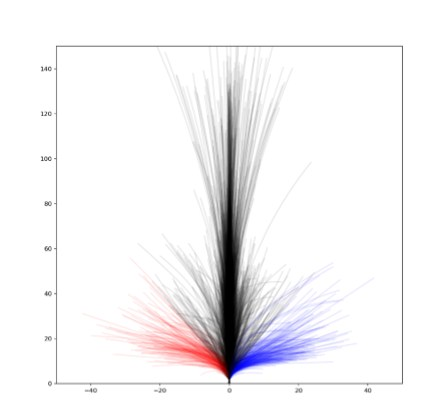
図2：高レベルの経路入力。将来 5 秒間の車両の正解軌道を示す。各軌道は、10 秒先の将来から導出された左／直進／右の経路入力に対応して、赤／黒／青に色分けされている。単位はメートルである。
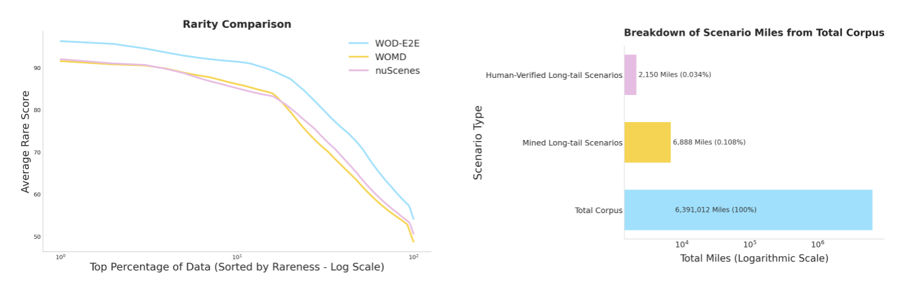
図3：左：運転データセットの希少性の比較。この図は、各データセットにおける上位パーセンテージのデータの平均希少性スコアを示しており、WOD-E2E における希少事象の分布を際立たせている。右：運転データの全コーパス（640 万マイル）に占める、マイニングされたロングテールシナリオの割合（0.03%）。
図中ラベル：Rarity Comparison＝希少性の比較、Average Rare Score＝平均希少性スコア、Top Percentage of Data (Sorted by Rareness - Log Scale)＝データの上位パーセンテージ（希少性で並べ替え、対数スケール）、Breakdown of Scenario Miles from Total Corpus＝全コーパスに対するシナリオ走行距離の内訳、Scenario Type＝シナリオの種類、Human-Verified Long-tail Scenarios＝人手で検証済みのロングテールシナリオ、Mined Long-tail Scenarios＝マイニングされたロングテールシナリオ、Total Corpus＝全コーパス、Miles＝マイル、Total Miles (Logarithmic Scale)＝総走行距離（マイル、対数スケール）
3.1.4 自車状態
各運転セグメントは、次の内容からなる自車の状態情報を含む。
過去の軌道：現在のカメラのタイムスタンプに揃えられた自車の過去 4 秒間の軌道が、4Hz の頻度のウェイポイント [(x1, y1), (x2, y2),...] として提供される。すべてのウェイポイントは車両座標で表される。
速度と加速度：過去の軌道に揃えられた自車の速度と加速度も提供される。
将来の軌道：運転ログから得られる自車の将来 5 秒間の軌道が、過去の軌道と同じ形式・頻度で提供される。この情報は学習セットと検証セットでのみ利用可能である。
3.1.5 ラベル
シナリオクラスタ：各セグメントには 11 種類のシナリオタイプのいずれか 1 つがタグ付けされている。これについては以降の節で詳しく説明する。
評価者フィードバックラベル：重要な事象における許容可能な運転判断の多様性を捉えるため、本データセットには評価者フィードバックラベルが含まれる。各運転セグメント内の特定の時点において、専門のラベラーが 3 本の異なる 5 秒間の将来軌道を 0 から 10 のスケールで評価する。0 は最悪の運転、10 は最良の運転を示す。重要な点として、評価者が指定した軌道のうち少なくとも 1 本は 6 より高いスコアを受けるようにしている。このラベルは検証セットにのみ提供される。これらのラベルの作成の詳細は後の節で述べる。
3.2 希少性の定量的比較
本節では、WOD-E2E の希少性を他の代表的な E2E 運転データセットと定量的に比較する。標準化された公平な希少性評価を行うため、大規模言語モデル Gemini 2.5 Pro［6］を用いて各データセットのテストセットにスコアを付けた。モデルには、前方カメラのシーケンスと、複雑さ・リスク・ロングテール要因に基づく 4 段階の希少性を概説した詳細な採点プロンプトが与えられた。プロンプトは、最大限の透明性のために、0〜100 の範囲の rarity_score、特定された rare_factors、および reasoning の推論過程を含む JSON オブジェクトを出力するよう求めた。
各シーンにスコアを付けた後、比較のための希少性の分布を図3（左）にプロットした。この曲線は、すべてのシーンを希少性スコアで（高い順に）順位付けし、データセットのそのパーセンテージまでのすべてのシーンの平均希少性スコアをプロットすることで生成される。
この図は、我々のデータセットがロングテールに焦点を当てていることを明確に示している。WOD-E2E の曲線はすべてのパーセンタイルにわたって他のすべてのデータセットより大幅に高く、ロングテール事象がより高い密度で集中していることが確認できる。具体的には、WOD-E2E はデータの最も極端な 10% でより高い平均スコア（約 93）を維持しており、さらに重要なことに、データセット全体を考慮した場合でもスコアが高いままである。これは、他のデータセットと比べて希少シナリオの密度が高いことを示している。
3.3 ロングテールデータのマイニング
3.3.1 マイニング戦略
我々は、数百万マイルに及ぶ多様な実世界の運転ログを含む非常に大規模なデータベースにアクセスできる。しかし、このデータの大部分は通常のシナリオで構成されている。ロングテールシナリオのみを効果的に抽出するため、ルールベースのヒューリスティクスと MLLM を組み合わせた効率的なマイニング戦略を開発した。まず、すべての運転ログを 11 の異なるカテゴリに分類した。
- 工事（Construction）：工事区域が関わるシナリオ。
- 交差点（Intersection）：交差点での複雑な相互作用を伴うシナリオ。
- 歩行者（Pedestrians）：歩行者との相互作用が関わるシナリオ。
- 自転車（Cyclists）：自転車との相互作用が関わるシナリオ。
- 複数車線での操作（Multi-Lane Maneuvers）：自車が複数車線の道路で車線変更を求められるシナリオ。
- 単一車線での操作（Single-Lane Maneuvers）：自車が単一車線の道路で行動を求められるシナリオ。
- 割り込み（Cut-ins）：他の道路エージェントが自車の車線に割り込むシナリオ。
- 路上異物（Foreign Object Debris）：動物や家具などのまれな物体があるシナリオ。
- 特殊車両（Special Vehicles）：特殊車両が関わるシナリオ。
- スポットライト（Spotlight）：人手で選ばれた困難なシナリオ。
- その他（Others）：上記のいずれのクラスタにも属さないシナリオ。
各カテゴリの詳細なマイニング基準を表1に示す。これらの基準は、3D 検出、地図作成、追跡、予測を含む、本データセットで利用可能な豊富な自動ラベルによって可能になっており、これらがマイニング処理に必要なヒューリスティクスを提供している。
3.3.2 事例研究
マイニング戦略の有効性を検証するため、合計 6,391,012 マイルを含む最近の運転ログの集合について事例研究を行った。自動マイニング戦略を適用した結果、ロングテールシナリオの基準に合致したのはデータのわずか 6,888 マイル（0.1%）であった。この初期結果は、図3の右図に示すように、膨大な量の通常の運転データからまれで困難な事象を切り出すうえで、我々の戦略が非常に効果的であることを示している。
さらに、データセットの品質を最高水準に保つため、続いて人手によるフィルタリングを 1 回行う。この人手によるレビュー工程は変換率（通過率）が 30% であり、ロングテールでないシナリオを除去することでマイニングされたデータをさらに精錬した。この最終フィルタリングにより、ロングテールシナリオの全体に占める割合はさらにまれな 0.03% まで減少し、実世界の運転におけるこれら重要事象の著しい低頻度を浮き彫りにしている。
3.3.3 データ分析
図4に示すように、都市の所在地、シナリオクラスタ、運転行動という 3 つの主要な次元にわたってデータセットの分布を分析する。
都市の分布。左上のサブ図は、異なる都市にわたるデータセットの地理的分布を示す。機密上の理由から、すべての都市名は匿名化されている。データは主に都市 L、K、J から得られており、テストセットにのみ存在する残りの都市は、より小規模だがより多様なシナリオの集合を提供しており、これはモデルの汎化を評価するうえで極めて重要である。
シナリオクラスタ。左下のサブ図は、問題クラスタと道路種別によるデータセットの構成を明確に概観するものである。
- まず、ロングテールシナリオの分布を問題クラスタ別に分析する。交差点、路上異物（FOD）、歩行者のクラスタがデータセットの最大の割合を占める。これは、交差点での入り組んだ相互作用、知覚モジュールにとって困難なシーン、歩行者との高リスクな遭遇など、さまざまな複雑で安全上重要な事象に我々が焦点を当てていることを示している。
- 本データセットは、Local Road（生活道路）、Arterial Minor（補助幹線道路）、Freeway（高速道路）の 3 つの主要な道路種別を含む。Freeway の道路種別は割り込みクラスタで最も顕著であり、これは高速時に特に安全上重要な事象である。また交差点クラスタにも顕著に存在する。これは、これらのシナリオが、オンランプに進入するための右折など、高速道路の出入口での相互作用を特に捉えているためである。
運転行動の分布。右のサブ図は運転行動の分布を示す。直進、車線変更、左折、右折、オンランプでの操作など、多様な行動が含まれる。行動の大部分は直進であり、これには典型的な車線追従だけでなく、緊急状況での急ブレーキや急な進路変更も含まれる。左折と右折を含む交差点での旋回行動はデータの約 30% を占め、その比率はおおむね等しい。さらに、車線変更はシナリオの 10.3% を占め（訳注：図4右の円グラフでは Lane Change は 10.5% と表示されており、本文の値と一致しない）、通常は衝突や障害物の回避を伴う。最後に、データの小さな部分（1.7%）はオンランプでの行動に充てられており、これは高速で合流する車両との相互作用のため、しばしば対処が困難である。
3.4 データのラベリング
マイニングされたデータはデータラベリングパイプラインに送られる。これは、重要時点の選択、軌道のサンプリング、軌道のスコアリングという 3 つの主要なステップからなる。
3.4.1 重要時点の選択
重要時点（critical moment）は、重要な事象が現れ、車両が重要な運転判断を下す必要がある特定のフレームとして定義される。これらの判断には、減速、寄せ（nudging）、シーン内の他車への道譲りといった行動が含まれうる。例を図5に示す。
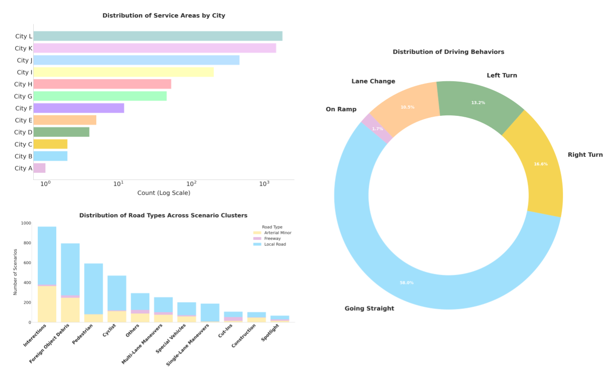
図4：包括的なデータ分布の分析。この図は、3 つの重要な次元にわたる WOD-E2E データセットの主要な特徴を示す。左上：都市別のサービスエリアの分布。左下：シナリオクラスタの分布と、その道路種別ごとの内訳。右：運転行動の分布。
図中ラベル：Distribution of Service Areas by City＝都市別のサービスエリアの分布、City A〜L＝都市 A〜L、Count (Log Scale)＝件数（対数スケール）、Distribution of Road Types Across Scenario Clusters＝シナリオクラスタごとの道路種別の分布、Number of Scenarios＝シナリオ数、Road Type＝道路種別、Arterial Minor＝補助幹線道路、Freeway＝高速道路、Local Road＝生活道路、Interections（原文ママ、Intersections）＝交差点、Foreign Object Debris＝路上異物、Pedestrian＝歩行者、Cyclist＝自転車、Others＝その他、Multi-Lane Maneuvers＝複数車線での操作、Special Vehicles＝特殊車両、Single-Lane Maneuvers＝単一車線での操作、Cut-ins＝割り込み、Construction＝工事、Spotlight＝スポットライト、Distribution of Driving Behaviors＝運転行動の分布、Going Straight＝直進、Lane Change＝車線変更、Left Turn＝左折、Right Turn＝右折、On Ramp＝オンランプ
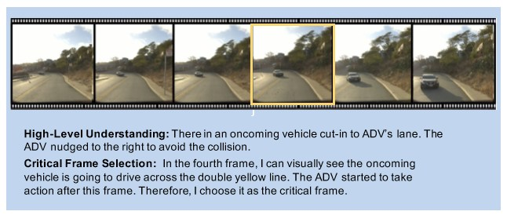
図5：重要フレームがどのように選択されるかの例示。人間の評価者はまず高レベルの理解のために動画全体に目を通し、次に重要フレーム、すなわち重要な事象がカメラ画像上で視覚的に明らかになる最も早い時点を選択する。最後に、評価者は重要フレームを選択した根拠も記録する。
図中テキスト：High-Level Understanding（高レベルの理解）：There in an oncoming vehicle cut-in to ADV's lane. The ADV nudged to the right to avoid the collision.＝対向車が ADV の車線に割り込んでくる。ADV は衝突を避けるために右へ寄せた。Critical Frame Selection（重要フレームの選択）：In the fourth frame, … I choose it as the critical frame.＝4 番目のフレームで、対向車が二重の黄色線を越えて走行しようとしていることが視覚的に確認できる。ADV はこのフレームの後に行動を取り始めた。したがって、これを重要フレームとして選ぶ。
ラベラーには、正確な時点を選択するために次の 3 段階のプロセスに従うよう指示している。
- 高レベルの理解：ラベラーはまず動画全体に目を通し、セグメント内の重要な事象を理解し、下すべき正しい運転判断を特定しなければならない。
- 視覚的手がかりに基づく時点の選択：次にラベラーは、重要な事象がカメラ映像上で視覚的に明らかになる最も早い時点を見つけなければならない。過去の動き情報によって生じる反応バイアスを避けるため、自動運転車がすでに行動を取り始めているフレームを選択するよう指示されている。これは通常、車線変更の開始時点やブレーキを開始する時点など、目的の行動が最も明確に現れるフレームである。
- 推論の記録：最後のステップでは、その特定のフレームを選択した根拠を簡潔に記録する。この記録により一貫性が確保され、モデルの学習と分析のための貴重なフィードバックが得られる。
3.4.2 軌道のサンプリング
軌道のサンプリングとは、特定の運転シナリオにおいて、後に人間がレビュー・選択するための多様な候補動作計画の集合を生成する処理である。我々のアプローチでは、Wayformer［20］などの既存の機械学習モデルを用いて、ある重要時点に対して最大 64 本の多様な軌道の初期集合を生成する。これらの軌道は、知覚の検出結果、地図要素、他の道路エージェントの予測行動など、さまざまな入力を用いて生成される。
| 工事（Construction） | 交差点（Intersection） |
|---|---|
|
|
| 歩行者（Pedestrians） | 自転車（Cyclists） |
|
|
| 割り込み（Cut-ins） | 路上異物（Foreign Object Debris） |
|
|
| 複数車線での操作（Multi-lane Maneuvers） | 単一車線での操作（Single Lane Maneuvers） |
|
|
| 特殊車両（Special Vehicles） | スポットライト（Spotlight） |
|
|
表1：各ロングテールシナリオカテゴリのマイニング基準。
我々の軌道選択プロセスは、自動フィルタリングと人間主導の選択の両方を活用する 2 段階のアプローチを採用し、評価に用いる最も代表的な動作計画を特定する。まず、生成された軌道は、速度、加速度、車線変更といった運転判断に基づいて、異なる「バケット」に自動的に振り分けられる。これらのバケットから、多様な候補の集合（通常 12 本未満）をサンプリングする。このサンプリングでは通常、横方向の動きの幅を捉えるために、最も左、中央、最も右の軌道を選択する。この少数の多様な軌道の集合が人間のラベラーに渡される。ラベラーの仕事は、これらの候補から最終的な順位付けと推論のための 3 本の軌道を選択することであり、これによりラベル付きデータには、最適な経路とともに、もっともらしい代替行動や準最適な行動が含まれるようにする。
3.4.3 軌道のスコアリング
サンプリングされた軌道候補は、選択された重要シナリオとともに、厳格な人手による採点プロセスのもとで訓練を受けた人間の評価者に送られる。
- シナリオの表示：効果的かつ正確なラベリングを確実にするため、選択されたロングテールシナリオは可視化ツール内で表示される。各シナリオは 20 秒の長さで、地図要素、カメラ画像、すべての道路上エージェントのアノテーションなどの包括的なデータを含む。候補軌道もこの環境内に直接描画される。ラベラーは異なるタイムスタンプ間を容易に移動でき、各候補軌道が、ログに記録された他の道路エージェントの将来の行動や静的な地図要素とどのように相互作用するかを正確に可視化できる。この機能は、情報に基づいた意思決定に不可欠である。
- 軌道の選択と採点基準：選択されたシナリオ内で、評価者はまず利用可能な候補から多様な 3 本の軌道を選択する。この選択には、最適または適切な行動とみなされる軌道を少なくとも 1 本含める必要があり、残りの 2 本は準最適でありうる異なる行動モードを表すべきである。次にラベラーは、これら 3 本の軌道を 5 つの異なる観点に基づいて評価する。
安全性：軌道が衝突、ニアミス、その他の危険な状態をもたらすかどうか。
合法性：緊急車両の周囲での適切な振る舞いを含め、軌道がすべての交通法規・規則に従っているかどうか。
反応時間：軌道内の自動運転車の行動が、展開する事象に対して適時であるかどうか。
ブレーキの必要性：軌道に不要な、急な、または過度に保守的なブレーキが含まれるかどうか。
効率性：不要な車線変更、ためらい、遠方の、あるいは無関係なエージェントへの過剰反応を避け、軌道が効率的な進行を示しているかどうか。 - 採点の仕組み：軌道は 0（最悪）から 10（完璧）のスケールで採点される。各軌道は基礎点 10 点で初期化される。その後、採点基準への違反に基づいて減点される。
- 重大な違反：安全性、反応時間、または法令違反に関する違反には 2 点の減点が適用される。
- 軽微な違反：ブレーキの必要性または効率性に関する違反には 1 点の減点が適用される。
上位 3 本の軌道に対する最終的な人間の評価の分布を図6に可視化する。このプロットは軌道品質の意図的な分離を明確に示している。Rank 1 の軌道は最適な行動へ強く偏っており、観測された最低スコアは 6 である。これは軌道を安全かつ実行可能とみなすために必要な最低スコアである。対照的に、Rank 2 と Rank 3 の軌道ははるかに広い範囲に分布し、特に Rank 3 ではかなりの量のデータがスコア 6 を下回っている。この多様なスコア範囲は、運転行動に求められるマルチモーダル性をうまく捉えている。最適な経路とともに、もっともらしい準最適な代替案や危険な代替案を含めることで、このラベル分布は頑健なエンドツーエンド運転モデルを推定するうえで不可欠な境界を提供する。
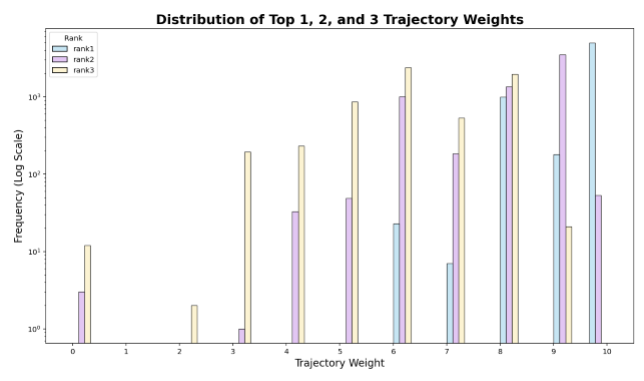
図6：WOD-E2E データセットにおける 3 本の候補軌道に対する人間の評価の分布。このプロットは軌道品質の意図的な分離を示している。最適な経路（Rank 1）とともに、もっともらしい準最適および危険な代替案（Rank 3）を含めることで、このラベル分布は頑健なエンドツーエンド運転モデルを推定するうえで不可欠な境界を提供する。
図中ラベル：Distribution of Top 1, 2, and 3 Trajectory Weights＝上位 1・2・3 位の軌道の重み（スコア）の分布、Rank＝順位、rank1〜rank3＝1〜3 位、Frequency (Log Scale)＝頻度（対数スケール）、Trajectory Weight＝軌道の重み（スコア）
3.5 Rater Feedback Score
Rater Feedback Score（RFS）は、人間がアノテーションした複数の軌道を参照として、モデルの予測軌道の品質を評価するよう設計された指標である。WOD-E2E データセットは人間の評価者が生成した 3 本の参照軌道を含み、それぞれに \([0, 10]\) のスコア \(s_{\text{rater}}\) が割り当てられている。
RFS は、図7に示すように信頼領域（trust region）を考慮することで、モデルの予測が 3 本の評価済み軌道にどの程度整合しているかを見るよう設計されている。信頼領域は、評価時刻 \(t \in \{3, 5\}\) 秒において各評価者軌道の周りに定義される。この領域は、時刻 \(t\) における評価者軌道から指定された縦方向および横方向の距離しきい値の内側にある矩形の空間を表す。
基礎しきい値は WOMD［10］に従い、\(t = 3\) では \(\bar{\tau}_{\text{lat}} = 1.0, \bar{\tau}_{\text{lng}} = 4.0\)、\(t = 5\) では \(\bar{\tau}_{\text{lat}} = 1.8, \bar{\tau}_{\text{lng}} = 7.2\) に設定される。ここで縦方向しきい値 \(\bar{\tau}_{\text{lng}}\) は常に横方向しきい値 \(\bar{\tau}_{\text{lat}}\) の 4 倍に設定される。これらの基礎しきい値は、評価者軌道の初速 \(v\)（m/s）に基づいてスケーリングされる。スケーリング関数は \(v\) の区分線形関数である。
\[ \text{scale}(v) = \begin{cases} 0.5, & v \lt 1.4, \\ 0.5 + 0.5 \times \frac{v - 1.4}{11 - 1.4}, & 1.4 \le v \lt 11, \\ 1, & v \ge 11. \end{cases} \]
\(t = 3, 5\) における最終しきい値は次のように決定される。
\[ \tau_{\text{lng}} = \text{scale}(v) \times \bar{\tau}_{\text{lng}}, \quad \tau_{\text{lat}} = \text{scale}(v) \times \bar{\tau}_{\text{lat}}. \]
距離誤差 \(\Delta_{\text{lng}}\)（縦方向）と \(\Delta_{\text{lat}}\)（横方向）および最終しきい値に対して、各評価者フィードバック軌道からのスコアは次のように定義される。
\[ s_{\text{rater}} \times 0.1^{\max\left\{ \max\left\{ \frac{\Delta_{\text{lng}}}{\tau_{\text{lng}}}, \frac{\Delta_{\text{lat}}}{\tau_{\text{lat}}} \right\} - 1,\, 0 \right\}}. \]
直感的には、予測軌道が信頼領域内にあれば一定のスコア \(s_{\text{rater}}\) を、そうでなければ \(s_{\text{rater}}\) から指数的に減衰したスコアを割り当てる。そして、すべての評価者指定軌道にわたる最大スコアを選び、続いて \(t = 3, 5\) にわたって平均し、下限を 4 とすることで最終スコアを決定する。
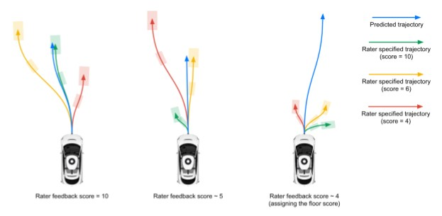
図7：Rater Feedback Score の仕組み。この図は、RFS がモデルの予測軌道（青）を 3 本の人間が評価した参照軌道に対してどのように評価するかを示す。予測スコアは、定義された信頼領域内で予測が整合する参照軌道のうち、最も高く評価されたものに基づく。
図中ラベル：Predicted trajectory＝予測軌道、Rater specified trajectory (score = 10 / 6 / 4)＝評価者が指定した軌道（スコア＝10／6／4）、Rater feedback score = 10＝評価者フィードバックスコア＝10、Rater feedback score ~ 5＝評価者フィードバックスコア約 5、Rater feedback score ~ 4 (assigning the floor score)＝評価者フィードバックスコア約 4（下限スコアを割り当て）
4 実験結果
4.1 ベースラインモデルの設定
ベースラインモデルとして、EMMA［14］を大幅に簡略化した版を用い、これを NaiveEMMA と呼ぶ。NaiveEMMA のアーキテクチャを図8に示す。NaiveEMMA は Gemini Flash［6］から直接ファインチューニングされており、社内の運転データセットでは一切学習されていない。公開された WOD-E2E の学習分割のみでファインチューニングされている。モデルは、現在のタイムステップにおける 8 台すべてのカメラの画像を連結して 768 × 768 解像度の単一画像にした結合画像を入力とする。また、3 秒間の過去の自車状態履歴と高レベルの経路入力も受け取る。重要な点として、過去のカメラフレームは使用しない。なお、NaiveEMMA は元の EMMA モデルのいくつかの高度な構成要素、具体的には汎用タスクの学習混合、思考の連鎖（Chain-of-Thought）推論、およびあらゆるテスト時スケーリング手法を省いている。
4.2 RFS 指標の検証
4.2.1 定量的検証
NaiveEMMA に基づくいくつかのモデルを学習し、社内のテスト分割で RFS を評価する。このテスト分割は、WOD-E2E のテスト分割と同様のロングテールシナリオを含む。この実験では、ロングテール設定においてモデルの品質を向上させると期待されるいくつかの要因、すなわち WOD-E2E の学習分割を通じたロングテールシナリオへの曝露、周囲について推論するためのマルチカメラ入力、シナリオの曖昧さに対処するためのテスト時スケーリングを制御する。RFS はこれらの直感と整合しており、これらの特徴をより多く活用するモデルにより高いスコアを割り当てる（表3）。
| モデル | RFS |
|---|---|
| Baseline | 7.14 |
| + WOD E2E ファインチューニング | 7.22 |
| + マルチカメラ入力 | 7.30 |
| + テスト時スケーリング（複数サンプリング） | 7.39 |
表3：RFS は、ロングテールシナリオへの対処能力がより高いモデルにより高いスコアを割り当てる。評価は社内のテスト分割で行っている。
4.2.2 定性的検証
本節では、図9に示すいくつかの定性的な例を通じて RFS 指標を検証する。
信頼領域内のスコア（図9a）。（左）このシーンでは低速で移動する工事車両が示されており、最適な軌道は慎重に追従することである。モデルの予測は最高評価の軌道（スコア 10.0）と緊密に整合しており、完璧な RFS 10.0 となる。（中央）この複雑な都市部の交差点では、ケーブルカーが移動している一方で、別の車両が右折を行っている。最も好まれる軌道（スコア 8.0）は交差点を慎重に進むことであり、評価の低い 2 本の軌道は急ブレーキや経路からの逸脱といった準最適な行動を含む。モデルの予測は好まれる経路とよく整合しているため、RFS 8.0 を受ける。（右）ここでの最良の行動は、安全に右へ寄せてバスの横を衝突せずに通過することである。モデルの予測はこの最適な行動を正確に追従しており、RFS 10.0 となる。
信頼領域外での減衰スコア（図9b）。（左）雪の状況で、ラベル付き軌道には直進と左折が含まれる。予測は左折の操作に従っているが、ラベル付き軌道よりわずかに高い速度であるため、スコアが減衰する。（中央）対向するオートバイにより回避操作が必要となる。予測は同程度の速度で同様の横方向の急な進路変更を行うが、車線端までの横方向の距離をより小さく保っているため、スコアが減衰する。（右）目的は、左から接近する自転車を避けるために適度な速度で直進することである。予測は最適な（スコア 10.0）軌道よりも大幅に遅く、スコアの減衰につながる。
| 手法 | RFS↑ | ADE↓ | 学習戦略 | モデル設定 | ||
|---|---|---|---|---|---|---|
| データセット数 | 学習スキーマ | モデルアーキテクチャ | モデルパラメータ数 | |||
| MLP ベース | ||||||
| Swin-Trajectory | 7.543 | 2.814 | 1 | SFT | Swin Transformer | 36M |
| 拡散ベース | ||||||
| DiffusionLTF | 7.717 | 2.977 | 4 | SFT | DiffusionDrive | 60M |
| UniPlan | 7.779 | 2.986 | 2 | SFT | DiffusionDrive | 60M |
| MLLM ベース | ||||||
| Baseline | 7.528 | 3.018 | 1 | SFT | Gemini1 Nano | 3B |
| AutoVLA | 7.556 | 2.958 | 3 | SFT+RL | Qwen2.5 | 3B |
| HMVLM | 7.736 | 3.071 | 1 | SFT | Qwen2.5 | 3B |
| Poutine | 7.986 | 2.741 | 2 | SFT+RL | Qwen 2.5 | 3B |
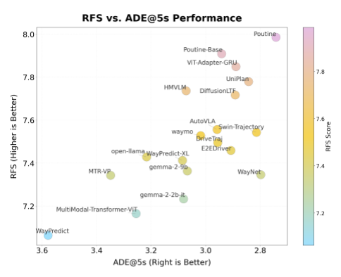
表2：WOD-E2E リーダーボードへの投稿結果。左：3 つの手法カテゴリ（MLP ベース、拡散ベース、MLLM ベース）の中から選んだ代表的な手法の結果と構成をまとめる。右：19 件の投稿を用いて RFS と ADE の関係をプロットする。RFS と ADE の間には弱い正の相関しか見られない。
（訳注：原表左では RFS 列の一部のセル（DiffusionLTF、Baseline、HMVLM、Poutine）が色付きで強調されている。また、本文 4.1 節ではベースライン NaiveEMMA を Gemini Flash からファインチューニングしたと述べているが、表2の Baseline のモデルアーキテクチャは「Gemini1 Nano」と記載されており、原文の記述が一致していない。）
図中ラベル（表2右）：RFS vs. ADE@5s Performance＝RFS と ADE@5s の性能比較、RFS (Higher is Better)＝RFS（高いほど良い）、ADE@5s (Right is Better)＝ADE@5s（右ほど良い）、RFS Score＝RFS スコア。各点の名称はリーダーボード投稿名（原文のまま）。
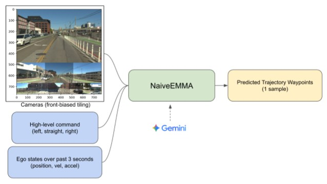
図8：チャレンジのリーダーボードのベースラインとなる NaiveEMMA のアーキテクチャ。NaiveEMMA は EMMA［14］を大幅に簡略化した版であり、Gemini Flash［6］からファインチューニングされている。モデルは 8 台すべてのカメラ画像、3 秒間の過去の自車状態履歴、高レベルの経路入力を入力として受け取る。そして 5 秒間の将来軌道を予測する。
図中ラベル：Cameras (front-biased tiling)＝カメラ画像（前方を重視したタイル配置）、High-level command (left, straight, right)＝高レベルコマンド（左、直進、右）、Ego states over past 3 seconds (position, vel, accel)＝過去 3 秒間の自車状態（位置、速度、加速度）、Predicted Trajectory Waypoints (1 sample)＝予測軌道のウェイポイント（1 サンプル）
評価者指定軌道から遠く離れた予測に対する下限スコア（図9c）。（左）ラベル付き軌道は車線追従と車線変更の両方を示している。しかし予測は、2 つの操作の間にある評価されていない領域を高速で進むため、下限スコアを受ける。（中央）すべてのラベル付き軌道が左折を示しているのに対し、予測は誤って右折する。有効な領域からのこの大きな逸脱により、下限スコアとなる。（右）ラベル付き軌道は右折を実行する。予測は直進し、指定された操作から完全に乖離して、下限スコアを受ける。
4.3 ベンチマークモデル
WOD-E2E の公開以来、さまざまなモデルを用いた多数の投稿を受け取っている。これらは大きく 3 つのカテゴリ、すなわち MLLM ベース、拡散ベース、MLP ベースのモデルに分けられる。以下では、表2に示すように、詳細な報告を公開している手法について詳述する。
Swin-Trajectory［23］は軽量な MLP ベースのモデルである。Swin Transformer［18］を用いて 3 台の前方カメラから画像特徴を抽出し、単純な MLP でウェイポイントを直接予測する。このモデルは軽量であり、ベースラインよりわずかに良い RFS（7.543）を達成している。
DiffusionLTF と UniPlan は、いずれも DiffusionDrive［17］アーキテクチャ上に構築された拡散ベースのモデルである。主な違いは使用する学習データセットにある。DiffusionLTF は WOD-E2E、CARLA［9］、NAVSIM［8］、WOD-Perception［26］を利用し、UniPlan は WOD-E2E と nuPlan［3］で学習されている。両者は同等の性能を達成しており、RFS スコアはそれぞれ 7.717 と 7.779 である。
Poutine［25］、HMVLM［29］、AutoVLA［40］はいずれも、Qwen2.5 をバックボーンとして用いる MLLM ベースのモデルである。これらは、カメラ画像と自車状態を入力モダリティとし、将来のウェイポイントをテキストとして出力するという類似した問題定式化を共有している。さらに、3 つのモデルはいずれも軌道を生成する前に思考の連鎖（CoT）推論を利用する。これらの類似点にもかかわらず、結果には大きな性能差が見られ、AutoVLA は RFS 7.556、HMVLM は 7.736、Poutine は 7.986 を達成している。これらの手法間の主な違いは次の点に由来する。
- 学習データの出所：AutoVLA は WOD-E2E、nuPlan、nuScenes の組み合わせを用いる。対照的に、HMVLM は WOD-E2E のみで学習され、Poutine は WOD-E2E と CoVLA データセットを組み合わせて用いる。
- CoT キャプションのスタイル：これら 3 つのモデルは、推論キャプションの生成に異なる方法を採用し、異なるプロンプトテンプレートを用いている。
- 強化学習（RL）による学習：HMVLM は事後学習としての強化学習を一切含まない。AutoVLA は ADE を報酬とする GPRO を取り入れ、Poutine は RFS を報酬とする GPRO を用いる。（訳注：「GPRO」は原文の表記どおり。一般には GRPO（Group Relative Policy Optimization）と表記される手法を指すと考えられる。）
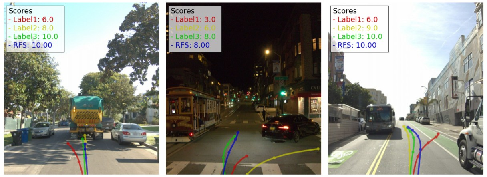
(a) モデルが予測した将来軌道（青）は、評価者が指定した軌道の 1 本とよく整合している。予測が信頼領域内に収まるため、対応する一定スコアが割り当てられる。
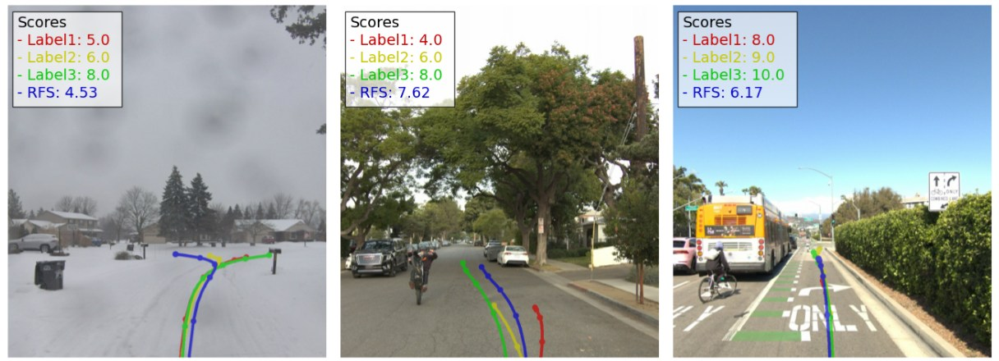
(b) モデルが予測した将来軌道（青）は、評価者が指定した軌道から逸脱している。予測が信頼領域の外に出るため、最終スコアは指数的に減衰する。
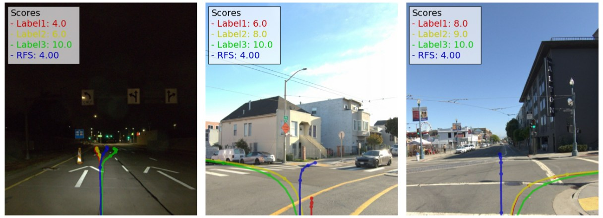
(c) 予測が評価者指定の軌道のいずれからも遠く離れているため、下限スコア（RFS=4）が割り当てられる。
図9：3 つの異なる条件における RFS 指標の可視化。上：モデルの予測が信頼領域内に収まる。中：モデルの予測が信頼領域のわずかに外に出る。下：モデルの予測が評価者指定の軌道のいずれからも遠く離れている。
図中ラベル：Scores＝スコア、Label1〜Label3＝ラベル 1〜3（評価者指定軌道とそのスコア。赤・黄・緑の線に対応）、RFS＝予測軌道（青）の RFS
4.4 結果の考察
これらのベンチマークモデルの結果から、以下では E2E 運転における重要な研究上の問いについて考察する。
Q1：データ分布の差が大きい追加のデータソースは E2E 運転に役立つか？
場合による。MLLM ベースのモデル、例えば Poutine や AutoVLA では、追加のデータソースを加えることが有効であり、明らかな性能向上をもたらす。しかし、拡散ベースのモデル、例えば UniPlan や DiffusionLTF では、わずかな改善しか見られない。この相違の説明として考えられるのは、MLLM のアーキテクチャ上の能力である。我々は、MLLM ベースのモデルが利用する CoT 推論により、複数のデータセットに内在する多様な世界知識と論理構造を効果的に活用できるという仮説を立てている。この明示的な推論機構は、データセット間の視覚的・幾何的な分布シフトにかかわらず有用であり続ける抽象的な運転知識を MLLM が内在化するのを助ける。対照的に、密なピクセルレベルの予測により直接的に依存する拡散ベースのモデルは、視覚的に異なるデータソースを組み合わせる際に性能劣化を起こしやすい。
Q2：より良い ADE は常により良い RFS につながるか？
いいえ、より良い ADE がより良い RFS を保証するわけではない。表2の右図に、異なるモデル投稿のいくつかのデータ点について、ADE と RFS の両スコアをプロットした。2 つの指標はおおまかな正の相関を示すものの、より良い ADE 性能がより高い RFS スコアに結びつかないモデルが数多く見られる。例えば、WayNet は 2.8 という非常に競争力のある ADE を達成し、最良の投稿の一つに数えられるが、その RFS は他の大半のモデルより大幅に低い。逆に、HMVLM は反対の傾向を示し、ADE は多くの投稿より悪いが、RFS は上位近くに位置する。この明確な乖離は RFS 指標の必要性を裏付けている。ADE だけでは、安全上重要でマルチモーダルなロングテールシナリオへの対処におけるモデルの真の有効性を評価するには不十分だからである。
Q3：強化学習（RL）は E2E 運転に有効か？
有効である。特に報酬が目標の評価指標と整合している場合にそうである。Poutine と AutoVLA はいずれも、事後学習の段階に RL を取り入れることで性能向上を示している。しかし、Poutine で観測された向上の方がはるかに顕著である。この差の主な理由は使用する報酬信号にある。Poutine は我々のロングテール評価指標と直接整合した RFS を報酬として用いるのに対し、AutoVLA は ADE を用いる。前の研究上の問いで示したように、ADE は常に RFS と強い正の相関を保つわけではなく、安全上重要なシナリオでの性能を最適化するには準最適な選択となる。
5 結論
本論文では、困難なロングテールシナリオにおいてエンドツーエンド運転システムを評価するために特別に選定された新しいベンチマークである Waymo Open Dataset for End-to-End Driving（WOD-E2E）を紹介した。既存のデータセットは主に通常の運転で構成されており、真の頑健性を試すことができていない。我々のデータセットは、合計約 12 時間の 4,021 個の運転セグメントを提供し、頻度 0.03% 未満で発生するまれな事象に焦点を当てている。
このような複雑でマルチモーダルな状況における ADE のような従来の指標の限界を克服するため、新しい指標である Rater Feedback Score（RFS）も導入した（訳注：原文は「introducedsss」と誤植）。RFS は、専門家がアノテーションした選好ラベルに照らしてモデルの軌道を評価する、新しい人間と整合した指標である。我々のベンチマーク分析はデータセットの有用性を検証し、ADE と RFS のスコアの間に明確な乖離があることを示した。これは、安全上重要なシナリオにおける真の性能を捉えるうえで RFS が不可欠であることを裏付けている。ベンチマーク結果はまた、MLLM ベースのモデルの将来性と、報酬が RFS 指標と直接整合している場合の強化学習の有効性を浮き彫りにしている。
現実的なセンサシミュレーションの計算コストが法外に高いため、WOD-E2E ではオープンループの設定を採用した。これは限界ではあるが、WOD-E2E はオープンループの E2E 運転ベンチマークの最先端を前進させるものである。さらに、本データセットに含まれるロングテールの実世界運転シナリオは、高忠実度シミュレータの汎化性の検証にも応用できる可能性がある。
我々の WOD-E2E データセットと RFS 指標が、より汎化性が高く、頑健で、安全な自動運転エージェントの開発に今後も貢献し続けることを期待する。
参考文献
参考文献は原文のまま掲載した。
- Hidehisa Arai, Keita Miwa, Kento Sasaki, Kohei Watanabe, Yu Yamaguchi, Shunsuke Aoki, and Issei Yamamoto. Covla: Comprehensive vision-language-action dataset for autonomous driving. In 2025 IEEE/CVF Winter Conference on Applications of Computer Vision (WACV), pages 1933–1943. IEEE, 2025.
- Holger Caesar, Varun Bankiti, Alex H Lang, Sourabh Vora, Venice Erin Liong, Qiang Xu, Anush Krishnan, Yu Pan, Giancarlo Baldan, and Oscar Beijbom. nuscenes: A multimodal dataset for autonomous driving. In CVPR, 2020.
- Holger Caesar, Juraj Kabzan, Kok Seang Tan, Whye Kit Fong, Eric Wolff, Alex Lang, Luke Fletcher, Oscar Beijbom, and Sammy Omari. nuplan: A closed-loop ml-based planning benchmark for autonomous vehicles. arXiv preprint arXiv:2106.11810, 2021.
- Sergio Casas, Abbas Sadat, and Raquel Urtasun. Mp3: A unified model to map, perceive, predict and plan. In Proceedings of the IEEE/CVF Conference on Computer Vision and Pattern Recognition, 2021.
- Ming-Fang Chang, John Lambert, Patsorn Sangkloy, Jagjeet Singh, Slawomir Bak, Andrew Hartnett, De Wang, Peter Carr, Simon Lucey, Deva Ramanan, et al. Argoverse: 3d tracking and forecasting with rich maps. In Proceedings of the IEEE/CVF conference on computer vision and pattern recognition, pages 8748–8757, 2019.
- Gheorghe Comanici, Eric Bieber, Mike Schaekermann, Ice Pasupat, Noveen Sachdeva, Inderjit Dhillon, Marcel Blistein, Ori Ram, Dan Zhang, Evan Rosen, et al. Gemini 2.5: Pushing the frontier with advanced reasoning, multimodality, long context, and next generation agentic capabilities. arXiv preprint arXiv:2507.06261, 2025.
- Can Cui, Yupeng Zhou, Juntong Peng, Sung-Yeon Park, Zichong Yang, Prashanth Sankaranarayanan, Jiaru Zhang, Ruqi Zhang, and Ziran Wang. Vilad: A large vision language diffusion framework for end-to-end autonomous driving. arXiv preprint arXiv:2508.12603, 2025.
- Daniel Dauner, Marcel Hallgarten, Tianyu Li, Xinshuo Weng, Zhiyu Huang, Zetong Yang, Hongyang Li, Igor Gilitschenski, Boris Ivanovic, Marco Pavone, Andreas Geiger, and Kashyap Chitta. Navsim: Data-driven non-reactive autonomous vehicle simulation and benchmarking. In Advances in Neural Information Processing Systems (NeurIPS), 2024.
- Alexey Dosovitskiy, German Ros, Felipe Codevilla, Antonio Lopez, and Vladlen Koltun. Carla: An open urban driving simulator. In CoRL, 2017.
- Scott Ettinger, Shuyang Cheng, Benjamin Caine, Chenxi Liu, Hang Zhao, Sabeek Pradhan, Yuning Chai, Ben Sapp, Charles R Qi, Yin Zhou, et al. Large scale interactive motion forecasting for autonomous driving: The waymo open motion dataset. In ICCV, 2021.
- Andreas Geiger, Philip Lenz, Christoph Stiller, and Raquel Urtasun. Vision meets robotics: The kitti dataset. The international journal of robotics research, 2013.
- Yihan Hu, Jiazhi Yang, Li Chen, Keyu Li, Chonghao Sima, Xizhou Zhu, Siqi Chai, Senyao Du, Tianwei Lin, Wenhai Wang, et al. Planning-oriented autonomous driving. In CVPR, 2023.
- Jyh-Jing Hwang, Henrik Kretzschmar, Joshua Manela, Sean Rafferty, Nicholas Armstrong-Crews, Tiffany Chen, and Dragomir Anguelov. Cramnet: Camera-radar fusion with ray-constrained cross-attention for robust 3d object detection. In ECCV, 2022.
- Jyh-Jing Hwang, Runsheng Xu, Hubert Lin, Wei-Chih Hung, Jingwei Ji, Kristy Choi, Di Huang, Tong He, Paul Covington, Benjamin Sapp, Yin Zhou, James Guo, Dragomir Anguelov, and Mingxing Tan. EMMA: End-to-end multimodal model for autonomous driving. Transactions on Machine Learning Research, 2025.
- Zhiqi Li, Wenhai Wang, Hongyang Li, Enze Xie, Chonghao Sima, Tong Lu, Yu Qiao, and Jifeng Dai. Bevformer: Learning bird's-eye-view representation from multi-camera images via spatiotemporal transformers. In ECCV, 2022.
- Zhiqi Li, Zhiding Yu, Shiyi Lan, Jiahan Li, Jan Kautz, Tong Lu, and Jose M Alvarez. Is ego status all you need for open-loop end-to-end autonomous driving? In CVPR, 2024.
- Bencheng Liao, Shaoyu Chen, Haoran Yin, Bo Jiang, Cheng Wang, Sixu Yan, Xinbang Zhang, Xiangyu Li, Ying Zhang, Qian Zhang, et al. Diffusiondrive: Truncated diffusion model for end-to-end autonomous driving. In Proceedings of the Computer Vision and Pattern Recognition Conference, 2025.
- Ze Liu, Yutong Lin, Yue Cao, Han Hu, Yixuan Wei, Zheng Zhang, Stephen Lin, and Baining Guo. Swin transformer: Hierarchical vision transformer using shifted windows. In Proceedings of the IEEE/CVF international conference on computer vision, 2021.
- Norman Mu, Jingwei Ji, Zhenpei Yang, Nate Harada, Haotian Tang, Kan Chen, Charles R Qi, Runzhou Ge, Kratarth Goel, Zoey Yang, et al. Most: Multi-modality scene tokenization for motion prediction. In Proceedings of the IEEE/CVF Conference on Computer Vision and Pattern Recognition, pages 14988–14999, 2024.
- Nigamaa Nayakanti, Rami Al-Rfou, Aurick Zhou, Kratarth Goel, Khaled S Refaat, and Benjamin Sapp. Wayformer: Motion forecasting via simple & efficient attention networks. In ICRA, 2023.
- Chenbin Pan, Burhaneddin Yaman, Tommaso Nesti, Abhirup Mallik, Alessandro G Allievi, Senem Velipasalar, and Liu Ren. Vlp: Vision language planning for autonomous driving. In Proceedings of the IEEE/CVF Conference on Computer Vision and Pattern Recognition, pages 14760–14769, 2024.
- Chenbin Pan, Burhaneddin Yaman, Senem Velipasalar, and Liu Ren. Clip-bevformer: Enhancing multi-view image-based bev detector with ground truth flow. In Proceedings of the IEEE/CVF Conference on Computer Vision and Pattern Recognition, pages 15216–15225, 2024.
- Sungjin Park, Gwangik Shin, Jaeha Song, Sumin Lee, Hyukju Shon, Byounggun Park, Jinhee Na, Hawook Jeong, and Soonmin Hwang. Swin-trajectory: Technical report for 2025 waymo vision-based end-to-end driving challenge.
- Zhijie Qiao, Haowei Li, Zhong Cao, and Henry X Liu. Lightemma: Lightweight end-to-end multimodal model for autonomous driving. arXiv preprint arXiv:2505.00284, 2025.
- Luke Rowe, Rodrigue de Schaetzen, Roger Girgis, Christopher Pal, and Liam Paull. Poutine: Vision-language-trajectory pre-training and reinforcement learning post-training enable robust end-to-end autonomous driving. arXiv preprint arXiv:2506.11234, 2025.
- Pei Sun, Henrik Kretzschmar, Xerxes Dotiwalla, Aurelien Chouard, Vijaysai Patnaik, Paul Tsui, James Guo, Yin Zhou, Yuning Chai, Benjamin Caine, et al. Scalability in perception for autonomous driving: Waymo open dataset. In CVPR, 2020.
- Pei Sun, Mingxing Tan, Weiyue Wang, Chenxi Liu, Fei Xia, Zhaoqi Leng, and Dragomir Anguelov. Swformer: Sparse window transformer for 3d object detection in point clouds. In ECCV, 2022.
- Xiaoyu Tian, Junru Gu, Bailin Li, Yicheng Liu, Chenxu Hu, Yang Wang, Kun Zhan, Peng Jia, Xianpeng Lang, and Hang Zhao. Drivevlm: The convergence of autonomous driving and large vision-language models. In CoRL, 2024.
- Daming Wang, Yuhao Song, Zijian He, Kangliang Chen, Xing Pan, Lu Deng, and Weihao Gu. Hmvlm: Multistage reasoning-enhanced vision-language model for long-tailed driving scenarios. arXiv preprint arXiv:2506.05883, 2025.
- Hang Wang, Xin Ye, Feng Tao, Chenbin Pan, Abhirup Mallik, Burhaneddin Yaman, Liu Ren, and Junshan Zhang. AdaWM: Adaptive world model based planning for autonomous driving. In The Thirteenth International Conference on Learning Representations, 2025.
- Benjamin Wilson, William Qi, Tanmay Agarwal, John Lambert, Jagjeet Singh, Siddhesh Khandelwal, Bowen Pan, Ratnesh Kumar, Andrew Hartnett, Jhony Kaesemodel Pontes, et al. Argoverse 2: Next generation datasets for self-driving perception and forecasting. arXiv preprint arXiv:2301.00493, 2023.
- Florian Wintel, Sigmund H Høeg, Gabriel Kiss, and Frank Lindseth. Using diffusion ensembles to estimate uncertainty for end-to-end autonomous driving. arXiv preprint arXiv:2506.00560, 2025.
- Yichen Xie, Runsheng Xu, Tong He, Jyh-Jing Hwang, Katie Luo, Jingwei Ji, Hubert Lin, Letian Chen, Yiren Lu, Zhaoqi Leng, et al. S4-driver: Scalable self-supervised driving multimodal large language model with spatio-temporal visual representation. In Proceedings of the Computer Vision and Pattern Recognition Conference, 2025.
- Shuo Xing, Chengyuan Qian, Yuping Wang, Hongyuan Hua, Kexin Tian, Yang Zhou, and Zhengzhong Tu. Openemma: Open-source multimodal model for end-to-end autonomous driving. In Proceedings of the Winter Conference on Applications of Computer Vision, 2025.
- Runsheng Xu, Xin Xia, Jinlong Li, Hanzhao Li, Shuo Zhang, Zhengzhong Tu, Zonglin Meng, Hao Xiang, Xiaoyu Dong, Rui Song, et al. V2v4real: A real-world large-scale dataset for vehicle-to-vehicle cooperative perception. In Proceedings of the IEEE/CVF conference on computer vision and pattern recognition, 2023.
- Runsheng Xu, Chia-Ju Chen, Zhengzhong Tu, and Ming-Hsuan Yang. V2x-vitv2: Improved vision transformers for vehicle-to-everything cooperative perception. IEEE Transactions on Pattern Analysis and Machine Intelligence, 2025.
- Zhenhua Xu, Yujia Zhang, Enze Xie, Zhen Zhao, Yong Guo, Kwan-Yee K Wong, Zhenguo Li, and Hengshuang Zhao. Drivegpt4: Interpretable end-to-end autonomous driving via large language model. RA-L, 2024.
- Ekim Yurtsever, Jacob Lambert, Alexander Carballo, and Kazuya Takeda. A survey of autonomous driving: Common practices and emerging technologies. IEEE access, 2020.
- Jiang-Tian Zhai, Ze Feng, Jinhao Du, Yongqiang Mao, Jiang-Jiang Liu, Zichang Tan, Yifu Zhang, Xiaoqing Ye, and Jingdong Wang. Rethinking the open-loop evaluation of end-to-end autonomous driving in nuscenes. arXiv preprint arXiv:2305.10430, 2023.
- Zewei Zhou, Tianhui Cai, Seth Z Zhao, Yun Zhang, Zhiyu Huang, Bolei Zhou, and Jiaqi Ma. Autovla: A vision-language-action model for end-to-end autonomous driving with adaptive reasoning and reinforcement fine-tuning. arXiv preprint arXiv:2506.13757, 2025.